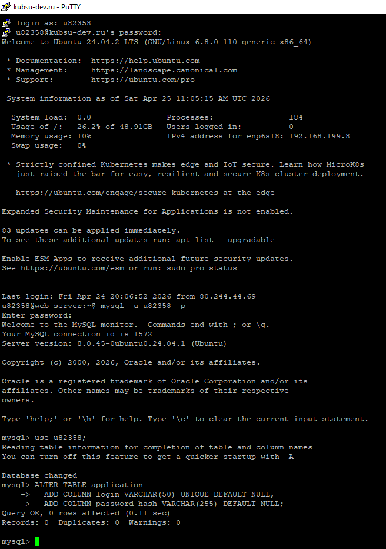

Добавление полей login и password_hash в таблицу application
Для реализации авторизации в лабораторной работе №5 в таблицу application были добавлены два новых поля:
login – уникальное имя пользователя (генерируется автоматически при первой отправке анкеты);password_hash – хеш пароля (сохраняется с помощью password_hash()).Это позволяет хранить учётные данные безопасно и использовать их для входа в систему.
ALTER TABLE application
ADD COLUMN login VARCHAR(50) UNIQUE DEFAULT NULL,
ADD COLUMN password_hash VARCHAR(255) DEFAULT NULL;
Команда выполнена в консоли MySQL после подключения к базе данных u82358.

После выполнения запроса таблица application готова к работе с системой логинов. Теперь при первой отправке формы генерируются уникальный логин и пароль, которые сохраняются в эти поля. При последующем входе введённый пароль сверяется с хешем.